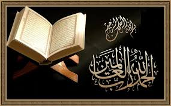
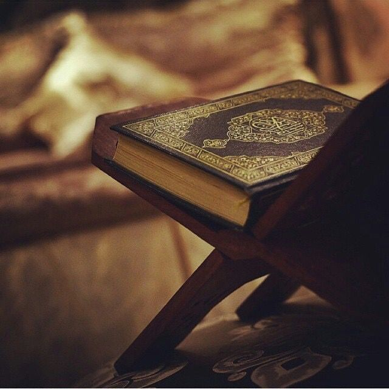
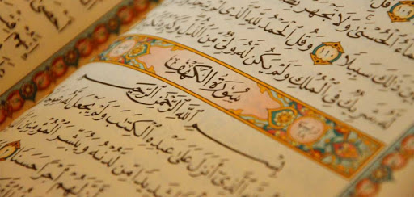

The role of books in human life is vital, dominant and undeniable. Books are as important as any other basic need of life. It is fact that books are a storehouse of knowledge. Everyone reads books according to his taste and temperament. am also fond of reading books. I have read a good number of novels, dramas, short stories and poetry books. Books not only give enjoyment but also leave a deeper impression on the mind of the reader. Luckily a large number of books are stacked in our family-library. Their sweet company has made me a true book-lover.
Holy QURAN
The book that I have read many times and would always love to read like my favorite book is the Holy Quran. I like the Holy Quran the most. It is a heavenly book. The Holy Quran was revealed to the Holy Prophet Hazrat Mohammad (PBUH). It is in the Arabic language. It is called the book of ALLAH.
“Some books are to be tasted, others are to be swallowed and some to be chewed and digested.”
The Holy Quran is my favorite book because I always get peace of mind after reciting it. Every morning love to recite the Holy Quran. I recite it with its Urdu translation. There is a lot of information in it. Every Muslim has a firm belief in it. It tells us about this life and the life hereafter.
“A room without books is like a body without a soul.”
The Holy Quran is a complete code of life. One can find a solution to every problem such as Social, economic, moral and religious. It deals with the worldly affairs and also with affairs of the world hereafter. It gives us complete guidance. There are clear instructions about our life in the Holy Quran. Every aspect of our life has been discussed in detail and in a logical Way. Its teachings are a very valuable guide.
“Book are my never- failing friends.”

The Holy Quran is surely the most read book in the world. Usually, the book is read only once or twice but the Holy Quran is read again and again. It is the only book which a large number of people have learned by heart. They recite it during their prayers and especially during the holy month of Ramadan. lt is the only book which is read by the non-Muslims also.
“Without books there Would be no history, there could be no concept of humanity.”
The Holy Quran gives us guidance about both the Worlds. It tells us what reward we can get if we do good deeds and what punishments can be for bad deeds. So, it proves a great help in character-building. it makes us a good Muslim as well as a good human being. It guides us to live a good life here but also can have a better life later.
The Holy Quran is not only for an individual or nation but also for the whole of humanity. It is for everyone. lt is for the believers as well as for the non-believers. It brings revolution in man’s life. Surely, the Holy Quran is a unique book.
“Books are the mirrors of the soul.”
I can say that generally, one book may be good from one point of view, another may be good from some other point of view but the Holy Quran is such a book as is good in every way. It is the best source of information and instruction and the perfect guide for me.There are ‘6666’ verses in it.It has ‘114’ chapters.This devine book has been divided into 30 parts which are called ‘Paraas’.It was descended gradually in about ’22’ years and ‘5’ months.
“Books play an important role in our life.”
“Sura Fatiha” Is The Preamble Of The Holy Quran:
“Sura Fatiha” is the preamble of the Holy Quran. This is the recited ‘Surah (Chapter) of the Holy Quran. In every ‘Raka’of ‘Namaz’,Surah Fatiha is recited.”Sura Baqra” is the largest Surat of the Holy Quran. It has ‘286’ verses.”Surah Kausar” is the smallest surah of the Holy Quran. It has ‘3’ verses.There are more than ’73’ thousand words in the Holy Quran.
What Holy Quran teach us?
The Quran teaches Muslims about respect. It also explains about Islam. In the Quran, the words are written in the Quraishi dialect. The language of the Quran is sweet. The first surah of the Quran is Surah al-Fatiha. The last surah of the Quran is Surah An-Nas. The 99 names of Allah or the Asma al-Husna are mentioned in the Quran. The Quran has four different names; they are Furqan, Quran Majeed, Quran Sharif and Quran Karim. Quran is in the Arabic language. It is translated in all the other major languages. All of the words that are in the Quran are Allah's words.
Quran teaches elders to love children. It also teaches childrens to respect elders. Quran has every thing we need to know. Before we read the Quran or a Surah we should say Bismillah -ir- Rahman ir-Rahim. It's translation is: (I begin) In the name of Allah the most Benificent the most Merciful. All Muslims should recite one Juz evryday. You should put the Quran in a clean spot and put it on top of everything. Every Muslim should know how to read the Quran. Allah will be very happy if you memorize the Quran. You could make Allah happy by completing the Quran. You could make Him happier by memorizing the Quran. More people have memorized the Qur'an than any other Book.

Names of 30 Para Of The Holy Quran
The Nobel Holy Quran
The Blessed Hadith Shareef:
Muslims follow the Holy Quran and the Hadith Shareef of Prophet Muhammad Sallallahu alaihi wa Sallam. The Quran is holy scripture, Word of Allah. Hadith is what Prophet Muhammad Sallallahu alaihi wa Sallam said. Sunnah is what Prophet Muhammad Sallallahu alaihi wa Sallam said, did, and approved of. When we read Hadith we learn about his sunnah. We want to learn about his Hadith because we want to follow what he did and what he approved of, in detail. Hadith is mentioned in the Quran and it is referred to as Hikmah (Wisdom) in the following verse:
"For Allah has sent down to you the Book and the Wisdom and taught you what you knew not (before): and great is the Grace of Allah upon you." (4:113)
Hadith is next in importance to the Quran, because Allah tells us in the Quran to obey Him and the beloved Prophet Muhammad Sallallahu alaihi wa Sallam as in the following verses:
"You have indeed in the Messenger of Allah a beautiful example (of conduct) for anyone whose hope is in Allah and the final Day and remembers Allah much." (33:21)
"Say: If you do love Allah, then follow me: Allah will love you and forgive you your sins, and Allah is Forgiving Merciful."(3:31)
"O people! The Messenger has come to you with the truth from your Lord. Therefore believe, (it is) better for you. And if you disbelieve, still, lo! to Allah belongs whatsoever is in the heavens and the earth. And Allah is ever Knower, Wise." (4:170)
"O you who believe! Obey Allah, and obey the Messenger and those of you who are in authority, then if you have a dispute concerning any matter, refer it to Allah and the Messenger if you are (in truth) believers in Allah and the Last Day. That is better and very good in the end." (4:59)
"Whoso obeys the Messenger, indeed obeys Allah and whoso turns away: we have not sent you as a warder over them." (4:80)
"O you who believe! Obey Allah and His Messenger, and turn not away from him when you hear ( him speak)." (8:20)
"O you who believe! Be not unfaithful to Allah and the Messenger, nor knowingly betray your trusts." (8:27)
"O you who believe! Obey Allah and obey the Messenger and render not your deeds useless." (47:33)
"And whatsoever the Messenger gives you, take it. And whatsoever he forbids, abstain (from it). And fear Allah. Lo! Allah is severe in retributing (evil) (59:7)

If we were to know the totality of Prophet Muhammad Sallallahu alaihi wa Sallam's teachings on any subject (for example charity), we need to study all the Hadith on that subject. Prophet Muhammad Sallallahu alaihi wa Sallam said, "Say your five prescribed prayers, keep Ramadan fasts, give Zakat of your property, and believe in one God." The above topics will now be discussed with a few Hadiths from Prophet Muhammad Sallallahu alaihi wa Sallam to demonstrate the importance of each subject in a Muslim's life. Unfortunately, all the Hadith are not provided, due to the nature of this short essay.
For one thing, Salah is one of the most important aspects of being a Muslim, where one prays to Allah for forgiveness. The significance of Salah is seen in the following Hadith of Prophet Muhammad Sallallahu alaihi wa Sallam. For example, Prophet Muhammad Sallallahu alaihi wa Sallam used to pray Salah for so long in the night in standing posture that his feet got swollen up. Hadrat Mughira Rady Allahu Anhu asked him, "O Prophet of Allah! Why do you exert so much when Allah Subhanahu wa Ta'ala has forgiven all your sins?" Prophet Muhammad Sallallahu alaihi wa Sallam replied, "Should I not be a grateful servant of Allah?"
Prophet Muhammad Sallallahu alaihi wa Sallam also said Salah was the best deed in the sight of Allah, followed by being good to your parents and to do Jihad in the way of Allah. (Bukhari, Muslim). Sayyidatina Aisha Rady Allahu Anha said that Prophet Muhammad Sallallahu alaihi wa Sallam offered witr prayers on different nights at various hours extending (from the Isha prayers) up to the last hours of the night. (Bukhari) This shows us the importance of Salah, from the above examples of Prophet Muhammad Sallallahu alaihi wa Sallam.
Surah Rehman ❤
Hadrat Salman Rady Allahu Anhu reports that Prophet Muhammad said, "This is indeed the month of patience, and the reward for patience is paradise. It is the month of sympathy with one's fellow men. It is the month wherein a true believer's sustenance is increased." (Bukhari)
Prophet Muhammad Sallallahu alaihi wa Sallam believed that you should not fast until you have seen the moon and do not leave the fasts until you see it, and if there are clouds, complete 30 days. (Malik) He also said that whoever forgets while he is fasting and eats or drinks, let him complete his fast because Allah has fed him and has given him drink. (Bukhari) Fasting is one of the pillars of Islam, and in order to practice Islam one needs to fast. The above Hadiths show us what fasting does for a person, and how important it is.
Zakat is also described in many of Prophet Muhammad Sallallahu alaihi wa Sallam's Hadith.
Prophet Muhammad Sallallahu alaihi wa Sallam said, "Allah Subhanahu wa Ta'ala loves the pious rich man who (in spite of his piety and wealth) is obscure and unknown to fame." (Muslim)
Abu Huraira Rady Allahu Anhu reported that Prophet Muhammad Sallallahu alaihi wa Sallam said, "The generous man is near Allah, near paradise, near men, and far from hell, but the miserly man is far from Allah, far from paradise, far from men, and near hell. Indeed, an ignorant man who is generous is dearer to Allah than is a worshipper who is miserly. (Tirmidhi)
Prophet Muhammad Sallallahu alaihi wa Sallam always gave away everything in charity, for example his mule on which he used to ride and a plot of land. (Tirmidhi) These narrations of the Prophet's sayings and life, demonstrate the gravity of Zakat and Sadaqah in a Muslim's life.
Finally, Prophet Muhammad Sallallahu alaihi wa Sallam believed that Allah is dearer to him than everything on which the sun rises. (Muslim) Prophet Muhammad Sallallahu alaihi wa Sallam used to say, "Glory to be to Allah; Praise be to Allah; there is no one worthy of worship but Allah; and Allah in most Great, is dearer to me than everything on which the sun rises." (Muslim) Prophet Muhammad Sallallahu alaihi wa Sallam said if anyone says this 100 times a day, his sins will be removed from him. (Muslim) Prophet Muhammad Sallallahu alaihi wa Sallam taught us that there is no might and no power other than Allah.
Hadith is a very important aspect of being a Muslim because it develops love for Allah Subhanahu wa Ta'ala and for Prophet Muhammad Sallallahu alaihi wa Sallam. Following the sayings of Prophet Muhammad Sallallahu alaihi wa Sallam makes you follow the right path.